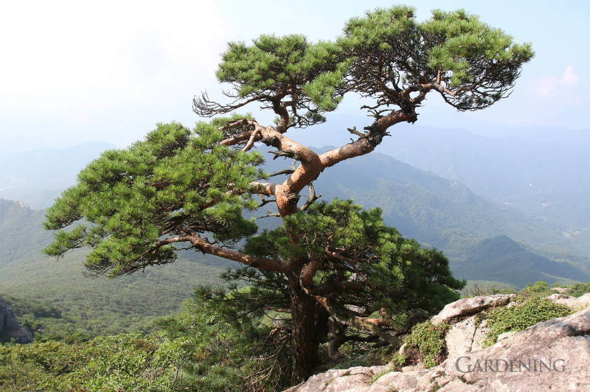

애국가
1절
동해물과 백두산이 마르고 닮도록
하나님이 보우하사
우리나라 만세 무궁화 삼천리 화려 강산
대한사람 대한으로 길이 보전하세
동해물이다
남산 위에 저 소나무 철갑을 두른듯
바람서리 불변함은 우리 기상일세
무궁화 삼천리 화려 강산
대한사람 대한으로 길이 보전하세
 소나무다
3절
가을 하늘 공활한데 높고 구름 없이
밝은 달은 우리 가슴 일편단심일세
무궁화 삼천리 화려 강산
대한사람 대한으로 길이 보전하세
가을하늘
4절
이 기상과 이 마음으로 충성을 다하여
괴로우나 즐거우나 나라사랑하세
무궁화 삼천리 화려 강산
대한사람 대한으로 길이 보전하세 접기
나라사랑